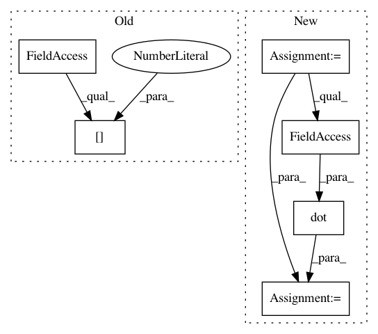

4143f005403808d11928b9772a9a40679a4d441e,GPy/kern/_src/psi_comp/rbf_psi_comp.py,,psicomputations,#Any#Any#Any#Any#,8
Before Change
mu = variational_posterior.mean
S = variational_posterior.variance
psi0 = np.empty(mu.shape[0])
psi0[:] = variance
psi1 = _psi1computations(variance, lengthscale, Z, mu, S)
psi2 = _psi2computations(variance, lengthscale, Z, mu, S).sum(axis=0)
After Change
psi1 = _psi1computations(variance, lengthscale, Z, mu, S)
psi2 = _psi2computations(variance, lengthscale, Z, mu, S)
if not return_psi2_n:
psi2 = psi2.sum(axis=0)
return psi0, psi1, psi2
def __psi1computations(variance, lengthscale, Z, mu, S):
Z - MxQ
mu - NxQ
S - NxQ
gamma - NxQ
In pattern: SUPERPATTERN
Frequency: 3
Non-data size: 6
Instances
Project Name: SheffieldML/GPy
Commit Name: 4143f005403808d11928b9772a9a40679a4d441e
Time: 2015-08-27
Author: alan.daniel.saul@gmail.com
File Name: GPy/kern/_src/psi_comp/rbf_psi_comp.py
Class Name:
Method Name: psicomputations
Project Name: librosa/librosa
Commit Name: d8ab8131e19498c2b9bed8d218e4e46eedc7cf21
Time: 2012-10-20
Author: brm2132@columbia.edu
File Name: librosa/tf_agc.py
Class Name:
Method Name: tf_agc
Project Name: nipy/dipy
Commit Name: bb940e99d0522bdb23cff7f3809d1b9c731afa80
Time: 2014-12-12
Author: arokem@gmail.com
File Name: dipy/reconst/sfm.py
Class Name: SparseFascicleFit
Method Name: odf